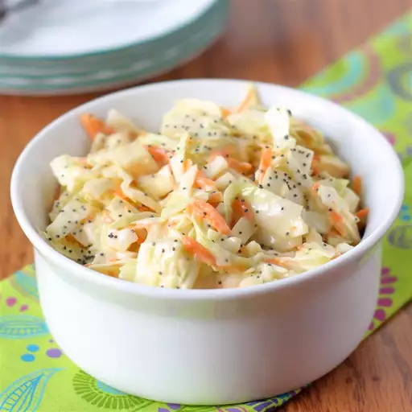

Sweet Restaurant Slaw

Ingredients
- 1 (16 ounce) bag coleslaw mix
- 2 tablespoons diced onion
- ⅔ cup creamy salad dressing (such as Miracle Whip™)
- ½ cup white sugar
- 3 tablespoons vegetable oil
- 1 tablespoon white vinegar
- ½ teaspoon poppy seeds
- ¼ teaspoon salt
How To
Step 1
Combine coleslaw mix and onion in a large bowl.
Step 2
Whisk salad dressing, sugar, vegetable oil, vinegar, poppy seeds, and salt together in a medium bowl until blended. Pour dressing over coleslaw mixture and toss to coat.
Step 3
Chill for at least 2 hours before serving.